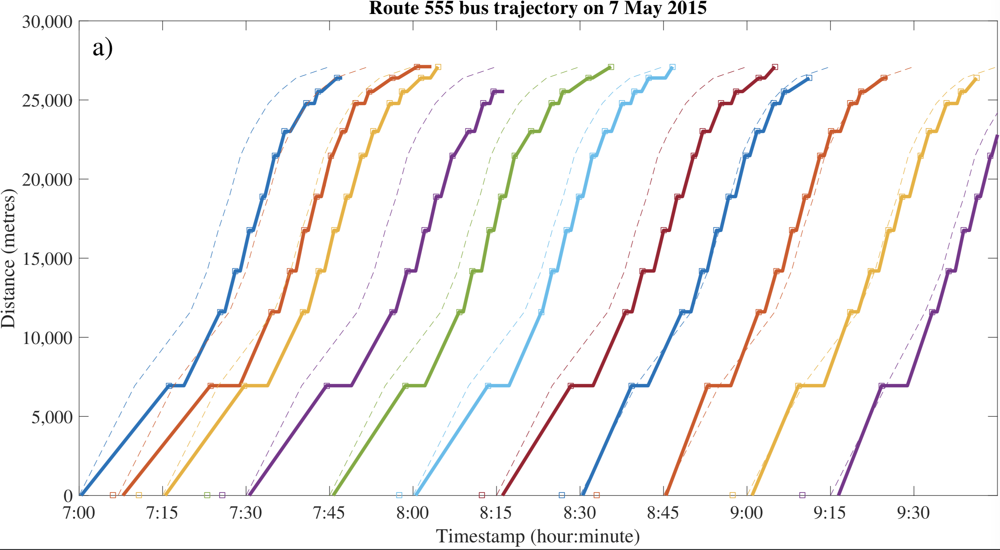
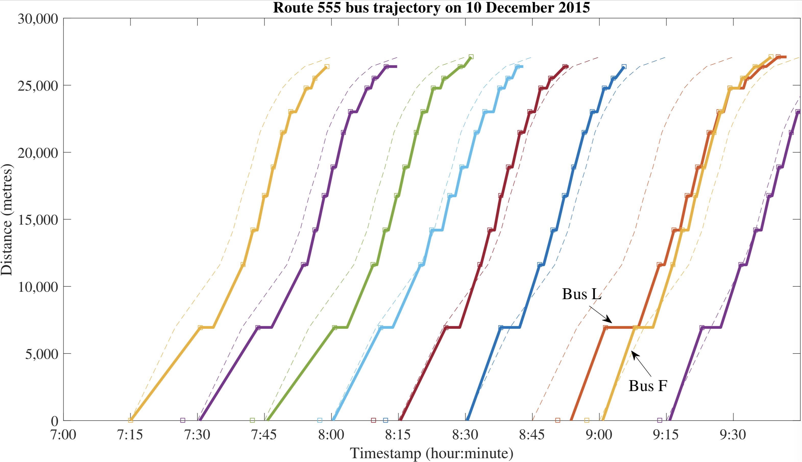
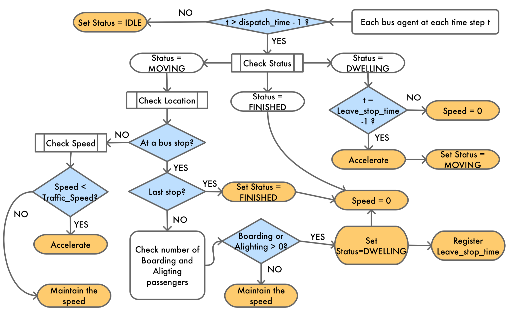
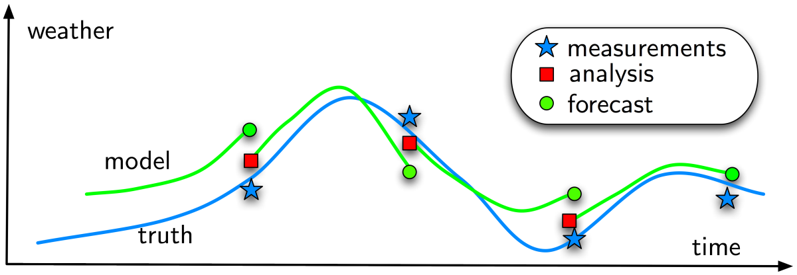
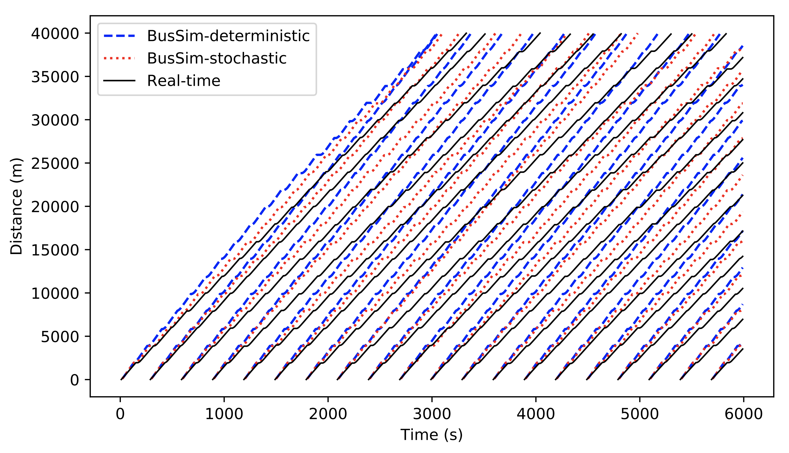
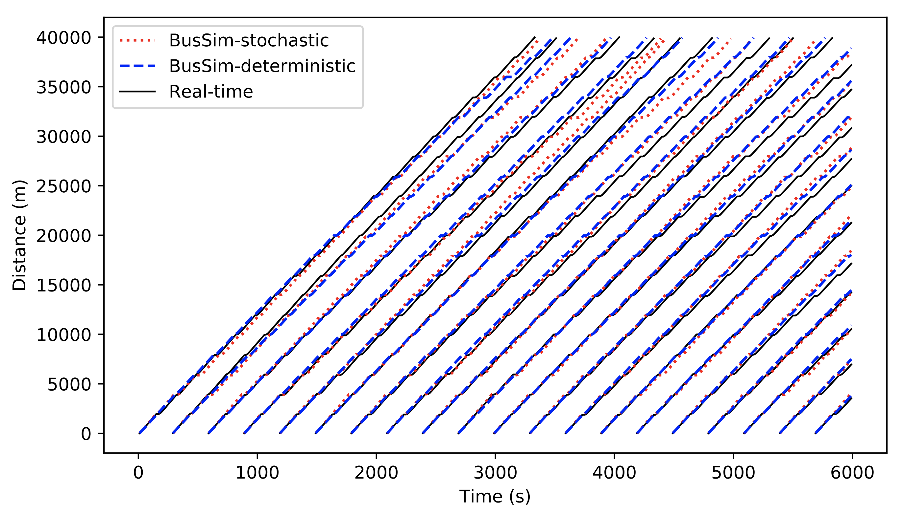
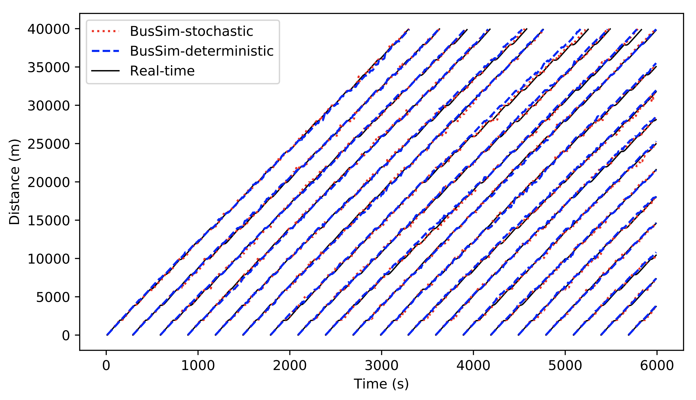

ABMUS 2019
14nd May, Concordia University, Montreal, Canada
Reducing the impacts of uncertainty in agent-based models for real-time applications
MINH KIEU, Nicolas Malleson, Alison Heppenstall, Andrew West and Kevin Minors
Leeds Institute of Data Analytics, University of Leeds
These slides:
https://leminhkieu.github.io/p/2019-ABMUS.html
Bus GPS trajectories
Bus bunching
Bus Simulation
BusSim Flowchart
Uncertainty
The reality is dynamic.
The reality is stochastic
There are unobserved variables
There is no systematic mechanism to incorporate new data into agent-based models
Solution: Data Assimilation
Try to improve estimates of the true system state by combining:
Noisy, real-world observations
Model estimates of the system state

Data Assimilation on Bus Simulation

Basecase scenario: No calibration
Calibration scenario
Calibration + Data Assimilation scenario
Bus Simulation with a Particle Filter
For more information about what we're doing
Data Assimilation for Agent-Based Models (dust)
Main aim: create new methods for dynamically assimilating data into agent-based models.
Uncertainty in agent-based models for smart city forecasts
Developing methods that can be used to better understand uncertainty in individual-level models of cities
Bringing the Social City to the Smart City
https://alisonheppenstall.co.uk/research/bringing-the-social-city-to-the-smart-city/